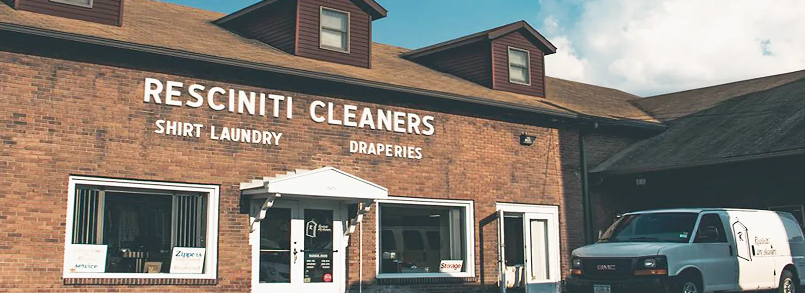
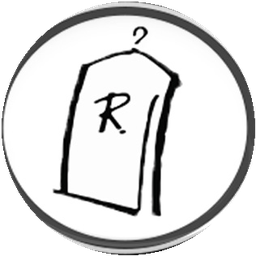

Rooted on Beethoven Street
Our shop sits at Beethoven and Goethe Streets, in a brick building that was once home to LaRue Cleaners.*

Binghamton, NY · Family-owned
Dry cleaning, shirts, alterations and free weekly pickup & delivery, from the same Binghamton family since the 1920s.*

Since 1924*
Our story
Resciniti Dry Cleaners was started by Emidio and Lucia Resciniti, who came to Binghamton from Roscigno, Italy. Lucia is remembered in the family as the founder of the business and for her love of the dry cleaners.
Generations later it is still a Resciniti family business. Today it is owned and run by Paul Resciniti,* right here on Beethoven Street, and still standing behind a simple promise: if we can't clean a shirt, it can't be cleaned.
After passing the 100-year mark,* we're still doing things the careful way: on-site alterations by experienced staff, a 4-hour same-day option, and free weekly pickup and delivery to your home or business.
In the community
Our shop sits at Beethoven and Goethe Streets, in a brick building that was once home to LaRue Cleaners.*
Resciniti Dry Cleaners is listed among the community donors in the UHS Foundation's 2011 Annual Report, supporting care at UHS hospitals in Greater Binghamton.
From weekly deliveries to local homes and businesses to restoring clothing and textiles after fire, smoke or water damage, we help neighbors get back to normal.
Placeholder: more community stories (sponsorships, drives, local teams) to be added once the family confirms them.
Services

We use the latest cleaning solutions available so your clothes and linens come out as clean, soft and bright as possible.
The safest alternative to dry cleaning, using green, environmentally safe soaps and conditioners.
Pressed on a hanger or folded in a box, your choice. If we can't clean a shirt, it can't be cleaned.
Scheduled weekly service from your home or business.
Visit
| Monday – Friday | 7:00 am – 6:00 pm |
|---|---|
| Saturday | 8:00 am – 5:00 pm |
| Sunday | Closed |
Holiday hours: to be confirmed.
Same-day service, pickup and delivery schedules, alterations, gowns, rugs: we're happy to help.
Call (607) 724-4577Also listed: (607) 722-5326*